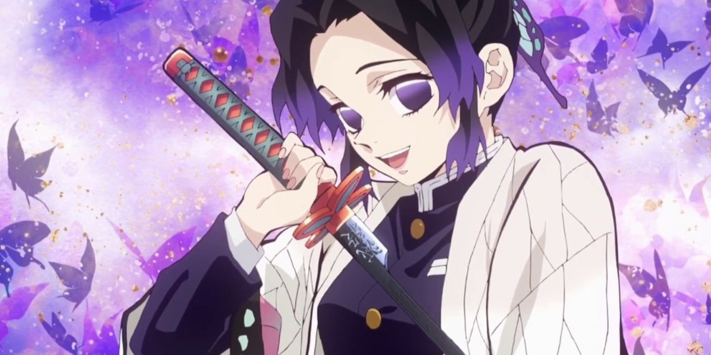
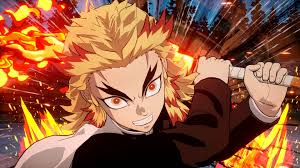
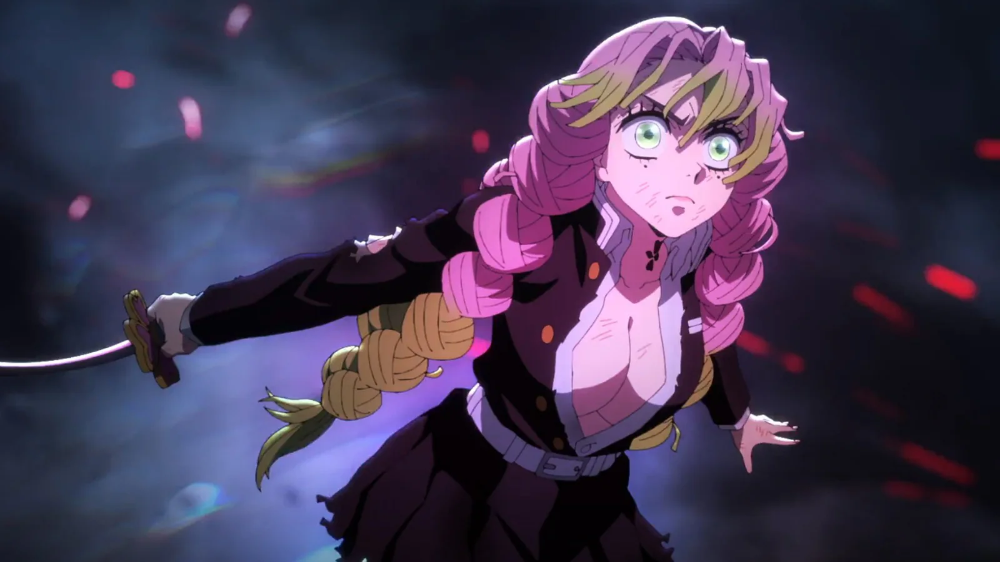
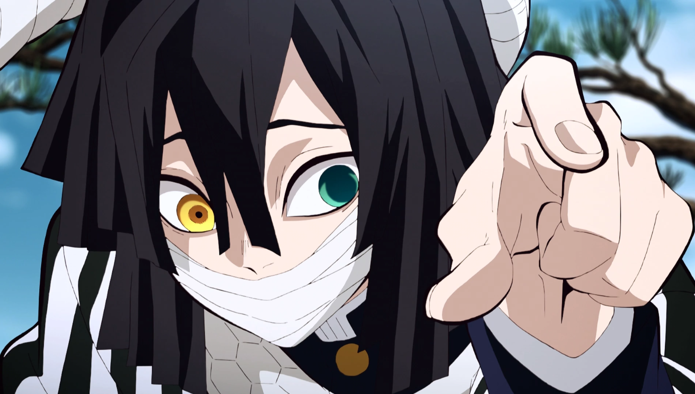
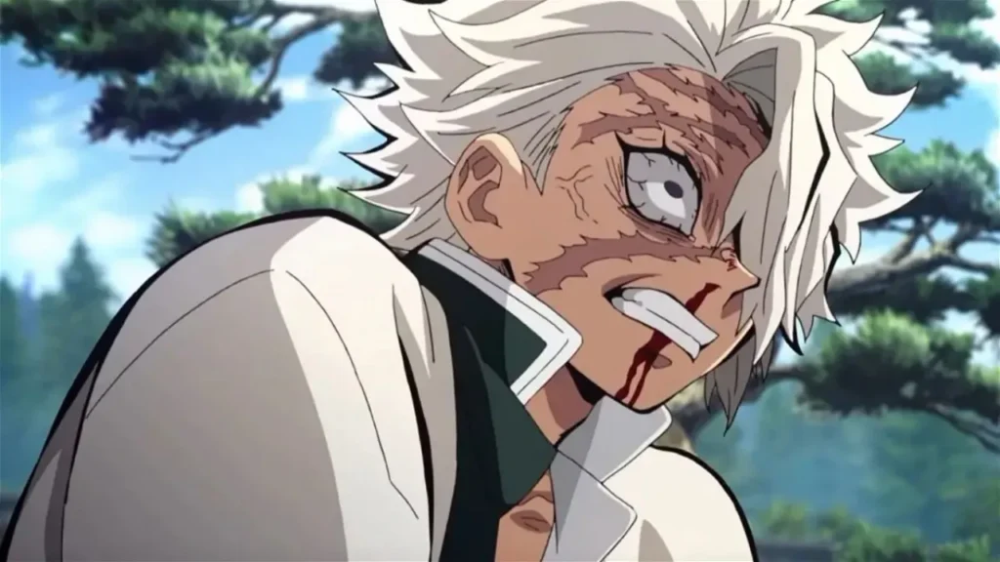
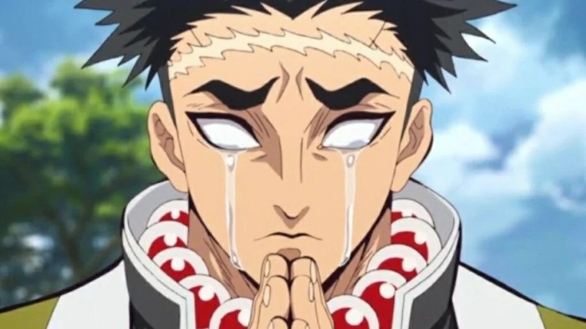
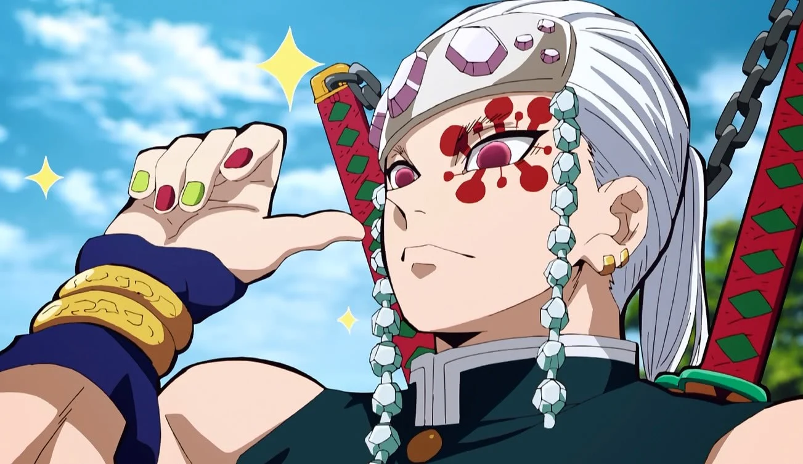
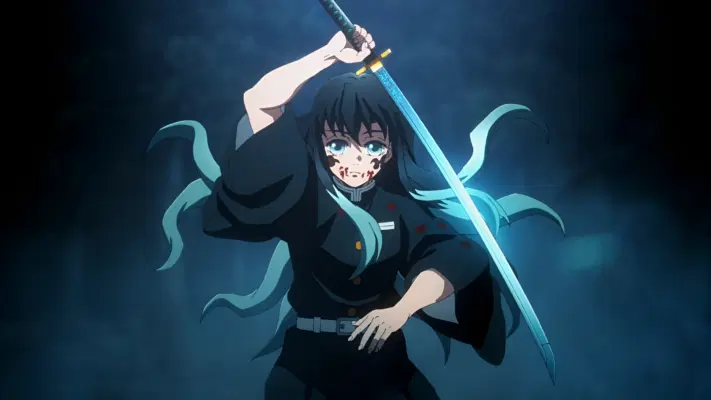

| Personagem | Nome | Poder | Resumo |
| |
Giyu Tomioka | Hashira da Água | Utilizando a técnica de respiração da água, Tomioka tem o mesmo estilo de combate de Tanjiro, caracterizados por golpes precisos. Aliás, ambos aprenderam com o mesmo mestre: Sakonji Urokodaki. |
|  | Shinobu Kocho | Hashira do Inseto | Shinobu, além de ser uma exímia espadachim, tem experiência médica que ela leva ao combate. Apesar de não ter a mesma força física de seus companheiros, ela é igualmente letal, utilizando uma lâmina mais fina coberta por um veneno mortífero. |
|  | Kyojuro Rengoku | Hashira das Chamas | Rengoku utiliza a técnica da respiração das chamas (diferente da respiração especial de Tanjiro, a solar), que consiste em poderosos golpes feitos para incapacitar os oponentes. |
|  | Mitsuri Kanroji | Hashira do Amor | Caracterizada pelos cabelos rosados com pontas verdes e uma personalidade apaixonada, Mitsuri é uma pessoa tímida. Em combate, ela usa a técnica de respiração do amor, que dispara chicotadas apaixonadas e mortais. |
|  | Obanai Iguro | Hashira das Serpentes | O jovem Obanai é um excelente espadachim que, apesar de ser parcialmente cego do olho direito, não deixa os oponentes escaparem. Ele utiliza uma espada assimétrica da categoria cris, que remete ao corpo esguio de uma cobra. |
|  | Sanemi Shinazugawa | Hashira do Vento | De visual excêntrico e explosivo, Sanemi utiliza a respiração do Vento, o que faz com que ele aja como um furacão no campo de batalha. Em uma das formas da técnica, por exemplo, ele avança para cima do oponente girando como um ciclone. |
|  | Gyomei Himejima | Hashira da Rocha | Gyomei se destacou entre os Hashiras por ser o maior do grupo e por aparecer sempre chorando sem parar. Esse gigante gentil utiliza uma arma de correntes no melhor estilo kusarigama, a fim de compensar o fato de ser cego -- assim, ele consegue ouvir o som das correntes e utilizá-la mais efetivamente do que com uma espada. |
|  | Tengen Uzui | Hashira do Som | Tengen, notório pela tatuagem vermelha em torno do olho esquerdo, utiliza duas grandes espadas, maiores do que uma lâmina Nichirin comum, conectadas por uma corrente. |
|  | Muichiro Tokito | Hashira da Névoa | Muichiro é um introspectivo e distraído jovem espadachim. Ele, diferente de muitos dos Hashira mencionados acima, utiliza uma espada comum e alcançou o posto de Pilar da sociedade de extermínio em apenas dois meses de treinamento. |
|
Tanjiro Kamado | Respiração do Sol | Tanjiro Kamado é o principal protagonista de Demon Slayer: Kimetsu no Yaiba. Ele é um membro de Kanoe dos Caçadores de Demônios, que se juntou a organização para caçar o responsável pelo assassinato de sua família e a transformação de sua irmã, Nezuko Kamado, em um demônio, enquanto também procurando uma cura para ela. |
|
Nezuko Kamado | Transformação Demoníaca | Nezuko Kamado é a irmã mais nova de Tanjiro Kamado e um dos dois membros restantes da família Kamado. Antes humana, ela foi atacada e transformada em um demônio por Muzan Kibutsuji. Ela é uma das protagonistas de Kimetsu no Yaiba: Demon Slayer. Procurar uma cura para Nezuko foi uma das razões que Tanjiro se tornou um Caçador de Demônios. |
Trailer Oficial DemonSlayerTrailer.